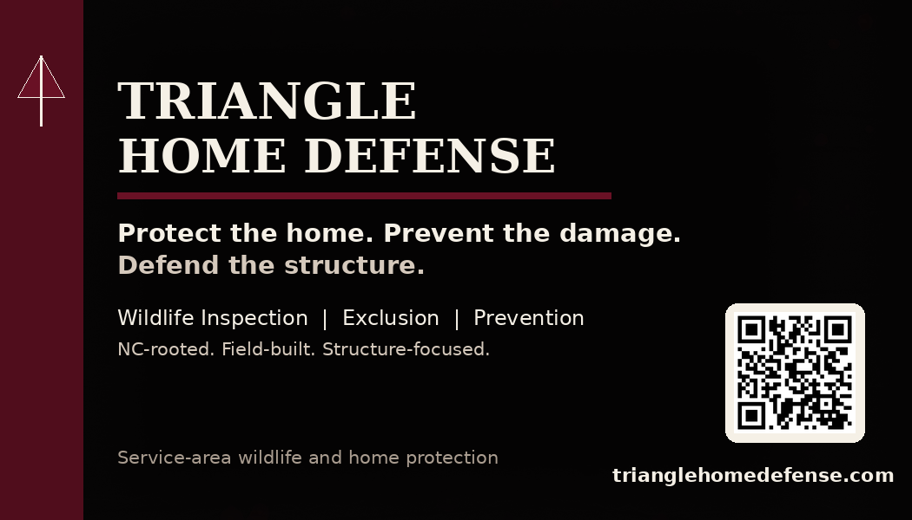
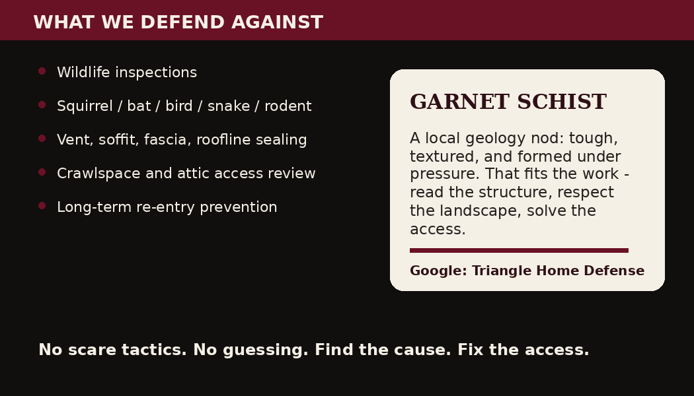

Wildlife inspections
Visual, non-destructive inspections focused on accessible evidence, likely travel paths, damage, and entry points.
Triangle Home Defense helps homeowners solve wildlife problems at the source: animal behavior, access points, rooflines, vents, crawlspaces, attics, and the conditions that let damage keep happening.
Most homeowners call because they want the issue handled quickly, professionally, and correctly without spending their weekend crawling through attics, guessing at repairs, or wrestling wildlife themselves.
Visual, non-destructive inspections focused on accessible evidence, likely travel paths, damage, and entry points.
Correction of vents, roofline gaps, soffit/fascia openings, foundation gaps, and other access points where appropriate.
Clear recommendations that reduce re-entry risk and help protect the home beyond the immediate animal issue.
Wildlife problems are rarely just an animal problem. They are usually a home-access problem. We document what is visible and accessible, explain what was found, and recommend a scope that fits the structure and species involved.
See the processThe look is intentionally rugged, local, and imperfect: dark garnet, stone texture, mountain reference, field-built service language, and no cartoon pest-control aesthetic.


Primary focus is Southern Wake County, Harnett County, Johnston County, Lee County, Fuquay-Varina, Angier, Clayton, Sanford, Garner, and nearby areas that can be served consistently.